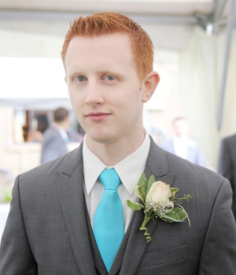

About Me

Hello! If you want to know more about me, then keep reading. Otherwise, feel free to hit that back button or close your browser. You have been warned...
My name is Brandt Strom, but considering the large header on this page you probably already knew that. What you probably do NOT know, is that I am a 29 year old Norwegian strawberry currently living is Redmond, WA. My wife, Rachel, and I have lived in the same two bedroom apartment for about 4 years now. We hope to own a home some day, but the important details of 'where' and 'when' are still unknown at this time.
My history is not very exciting but I don't have any complaints. I have two sisters and spent most of my childhood living in Puyallup. I spent a lot of time getting into trouble with friends and playing video games. Soccer consumed many evenings and weekends, and I still enjoy kicking a ball around to this day. After graduating from high school, I moved to Ellensburg for 4 years where I attended Central Washington University. It was there that I obtained a degree in Computer Science, which allowed me to secure a software development position in Redmond. I have been a software engineer for almost 7 years now and I am excited to keep growing in this field.
When I'm looking for something to do in my spare time, I usually enjoy playing video games and catching up with friends. I also enjoy listening to music and watching movies with Rachel. When my neighbors are not home I will occasionally use the opportunity to mess around on my drum set. Additionally, I try to make an effort to expand my knowledge on all things computers and technology by watching videos and reading blogs and articles.